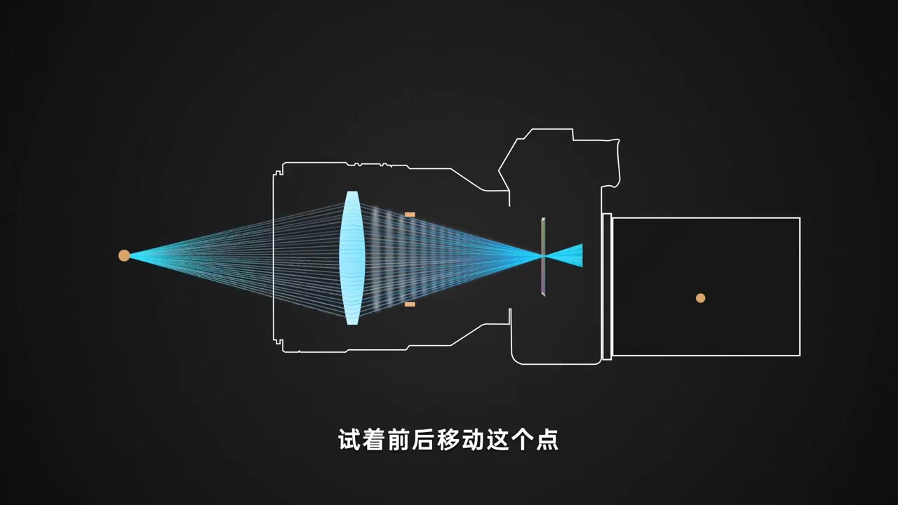
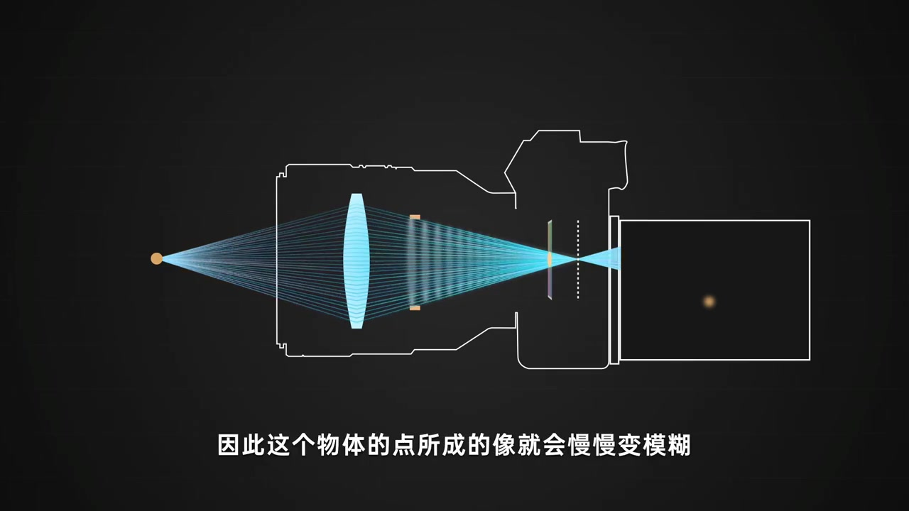
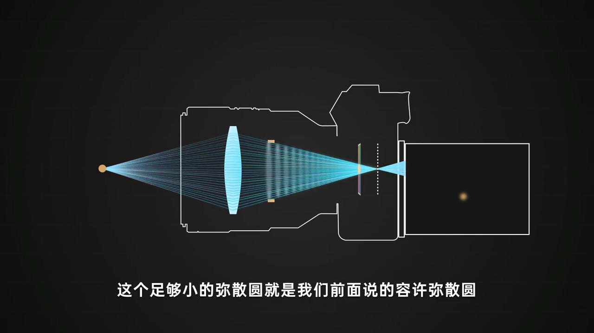
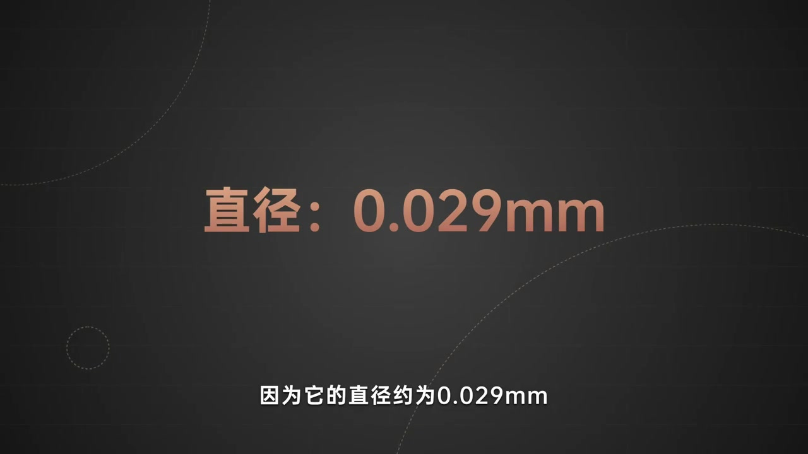
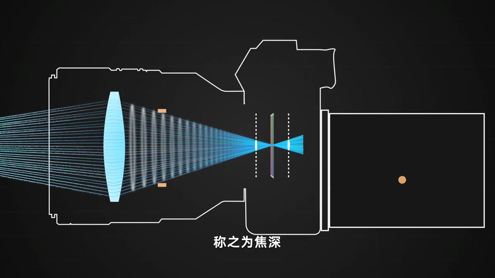
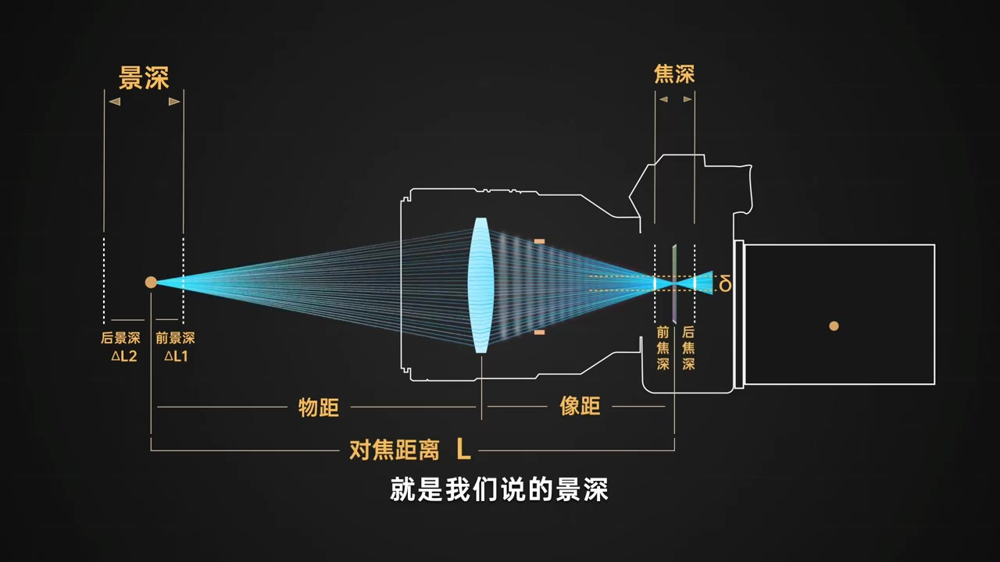
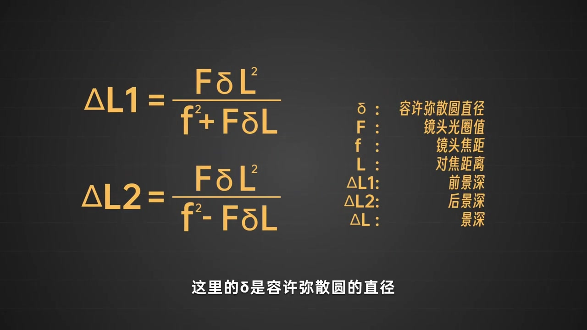
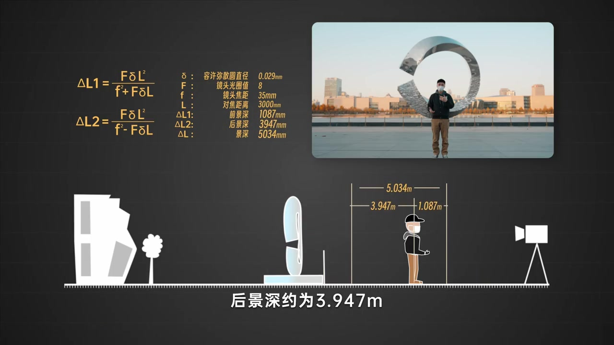

开场：试着前后移动这个点
深色底上，相机剖面图已经摆好：左侧橙点是物点，光线穿过蓝色凸透镜与橙色光圈块，汇聚到传感器平面。旁白让你「试着前后移动这个点」——物点一挪，成像焦点就会离开传感器。
画面字幕：「试着前后移动这个点」
说明：Whisper 常把「弥散圆」识成「弥散源」，「所成的像」识成「所称的像」，「辨认出模糊」识成「变成起模糊」，「演示」识成「掩饰」，「夹角」识成「假角」，「焦深」识成「焦身」，「被摄主体」识成「背摄主体」。下文叙述以可见字幕与动画画面为准；页面末尾仍完整保留全部 Whisper 分段。

焦点离开传感器：弥散圆逐渐扩大
物点一移，焦点就不再落在传感器上。传感器截到的是焦点之外、逐渐扩大的光斑——旁白称其为弥散圆。于是「这个物体的点所成的像」会慢慢变模糊；右侧画面也从锐利点变成软边大橙圆。
画面字幕：「因此这个物体的点所成的像就会慢慢变模糊」

只要弥散圆足够小，人眼就当它清晰
旁白立刻补上阈值：只要这个弥散圆足够小，人眼就无法辨认出模糊，自然也就认为是清晰的。这个「足够小的弥散圆」，就是前面讲过的容许弥散圆——后面景深的尺子，从这里定下来。
画面字幕：「这个足够小的弥散圆就是我们前面说的容许弥散圆」

全画幅 36×24mm：δ 大约 0.029mm
动画切到全画幅传感器示意，旁白说：以传感器大小 36mm×24mm 的全画幅相机来说，通常定义的容许弥散圆，放在手机上看差不多是这样——你可能「看不见」，「哦这很正常」，因为它的直径约为 0.029mm，只比发丝直径稍微大一点。
画面字幕：「因为它的直径约为0.029mm」

放大演示：焦点两侧的区间叫焦深
为了方便演示，旁白把容许弥散圆放大，放到焦点两侧、与光线夹角大小吻合的位置。这个区间就是「无法辨认其模糊」的范围，称之为焦深。此时前后移动被摄主体，只要不超过这个容许弥散圆对应的区间，我们就认为它是清晰的。
画面字幕：「称之为焦深」

与焦深对应：镜头外的清晰范围叫景深
旁白把对应关系讲清楚：与焦深对应，镜头之外物体前后相对清晰的范围，就是我们说的景深。画面左侧标出「景深 / 前景深 ΔL1 / 后景深 ΔL2」，右侧机内则是「焦深」——物方区间与像方区间一一对照。
画面字幕：「就是我们说的景深」

要算准景深，先引入公式与四个参数
想要准确计算出景深范围，需要引入公式。画面给出前景深 ΔL1 与后景深 ΔL2：分子都是 F·δ·L²，分母分别是 f²±F·δ·L。旁白点名：这里的 δ 是容许弥散圆直径 0.029mm；光圈设定到 F8；焦距 35mm；对焦距离 3m（3000mm）。还是以这个画面为例，准备代入计算。
画面字幕：「这里的δ是容许弥散圆的直径」

代入结果：总景深 5.034m，并留下光圈悬念
带入设定参数后，旁白报出：整个景深范围是 5.034 米（5034mm），其中前景深约 1.087 米，后景深 3.947 米。示意图在人物两侧标出前后景深长度。讲到这里，可能有人要问——说了半天景深范围是由容许弥散圆来定义的，那跟光圈到底有什么关系呢？视频在这里收束，把下一集的钩子留在空气里。
画面字幕：「是由容许弥散圆来定义的」
